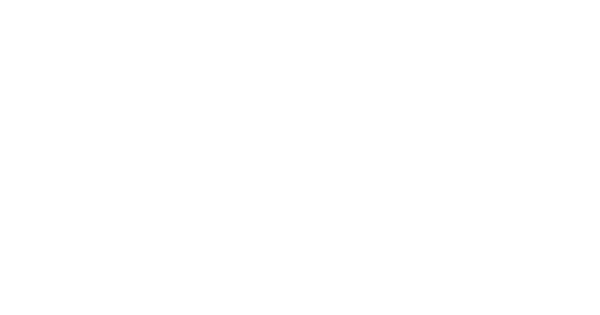
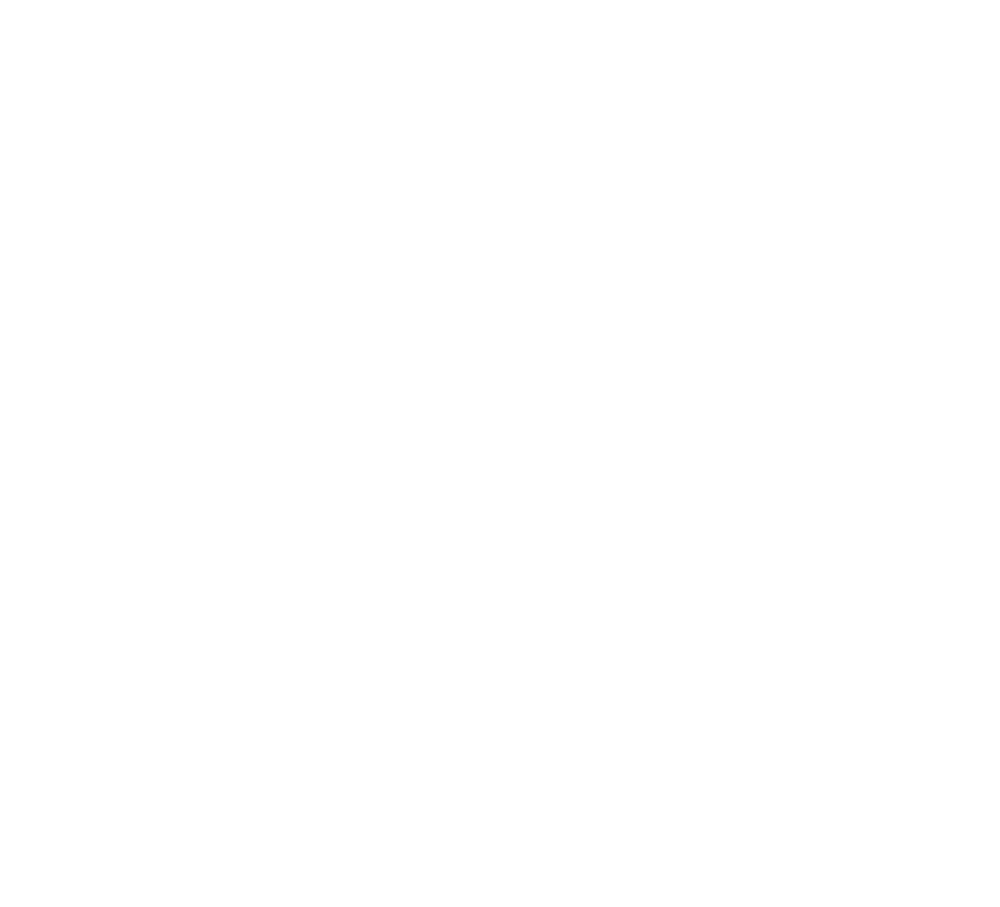
전통의 탈환
드라마로 시작된 한국의 문화가 전 세계의 주목을 받는 지금, 지루하고 고루한 고정관념에 갇혀 있던 전통 요소를 디자인과 몸짓을 통해 현대적 감각으로 '탈환'한 두 가지 선도적 사례를 분석해 전통의 현대적 공존 가능성을 모색하고자 한다.
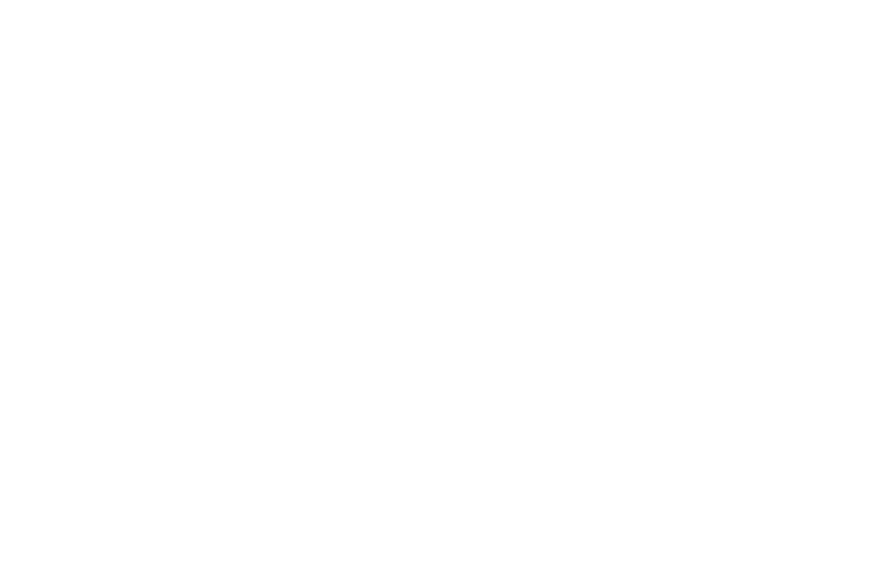
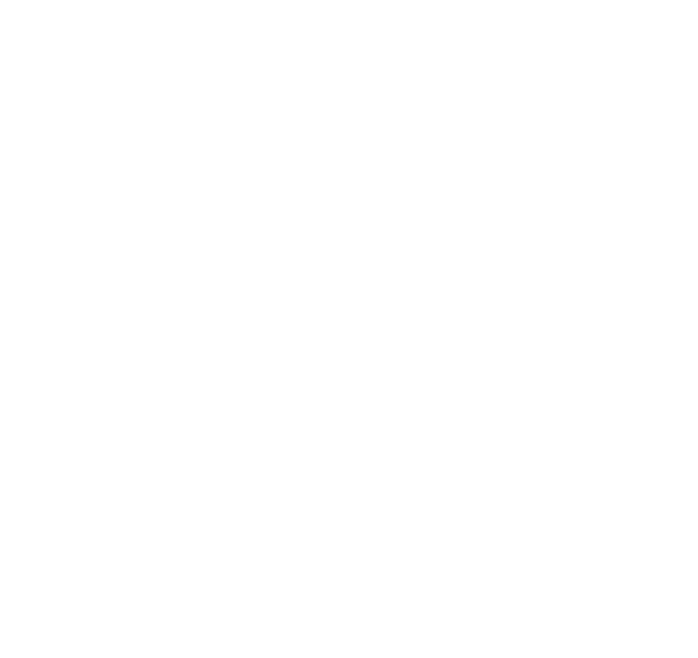
범접 (Beomjeob)
스트릿 댄서 특유의 독창적이고 파격적인 에너지로 한국적 요소를 무대 위에 녹여냈습니다.
미션
스우파2에서 범접이 받은 미션은 춤으로 자신의 나라를 표현하는 것이었습니다. 한국의 전통 이미지를 퍼포먼스 언어로 변환하는 출발점이 된 과제입니다.
저승사자 콘셉트
한국 전통 설화 속 사후 세계 이미지와 저승사자를 활용한 설정입니다. 단순한 퍼포먼스를 넘어 서사적인 몰입감을 높이는 역할을 합니다.
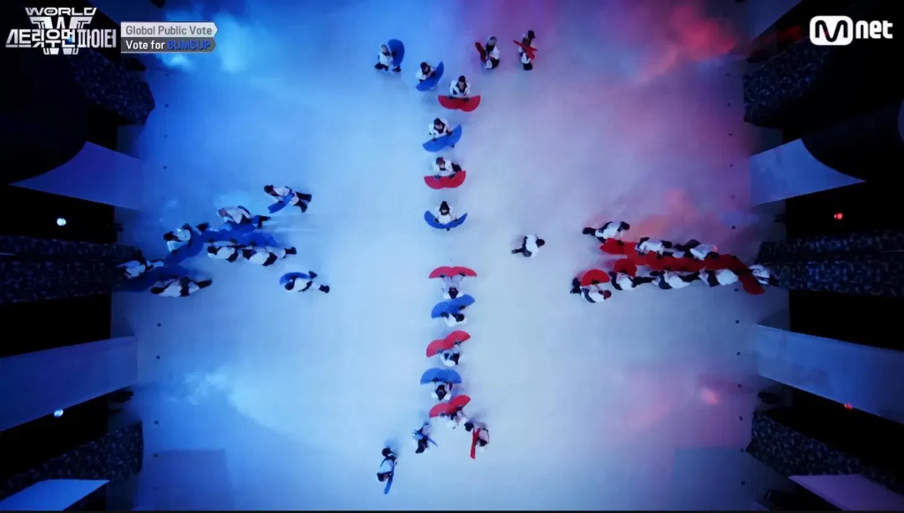
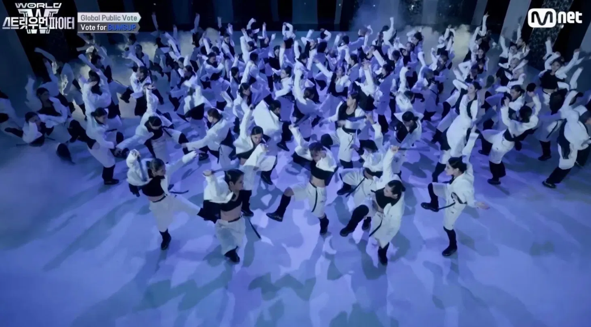
전통적 군무 구성
여러 명이 호탐을 맞춰 움직이는 장면이 돋보입니다. 한국 전통 공연에서 느껴지는 집단미와 정교함을 현대적으로 재해석한 방식입니다.
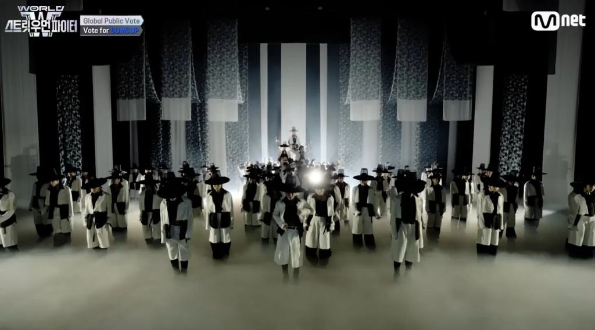
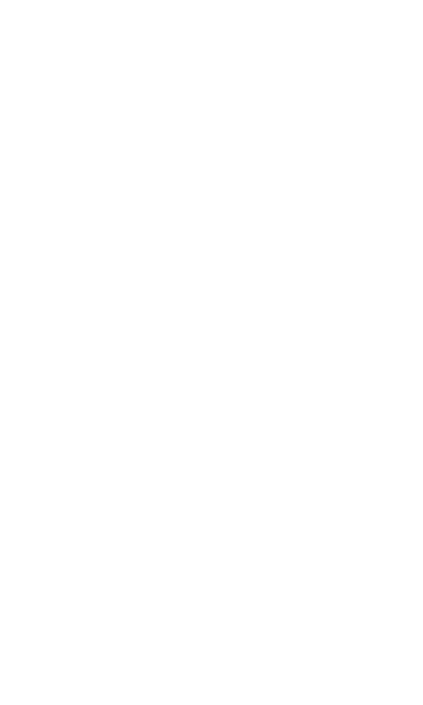

케이팝데몬헌터스 (KDH)
글로벌 트렌드 속에서 한국의 정체성을 가장 효과적이고 세련되게 시각화한 그래픽/디자인 아트를 선보입니다.
무기 — 전통의 형상
루미의 무기는 사인검으로, 사령을 다스리는 호랑이 4방위를 상징하는 조선왕조의 벽사용 도검이다. 조이의 무기는 무당이 굿을 할 때 사용하는 대신칼에서 따온 소형 칼이다. 미라의 무기는 가야 때 월도를 모티브로 제작되었다. 고대 헌터들의 무기는 석장, 쌍검, 각궁으로 각각 깊은 역사와 전통적 맥락을 담고 있다.
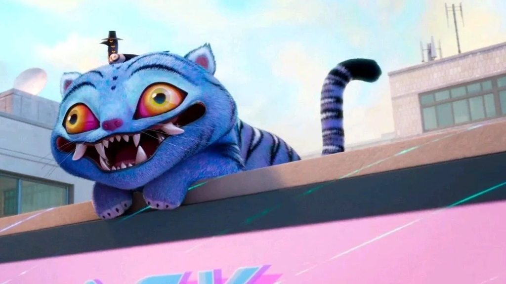
까치호랑이 민화
한국 민화 특유의 상징성과 해학을 보여주는 까치호랑이 민화 요소입니다. 호랑이와 까치의 조합을 통해 전통 미감을 자연스럽게 드러냅니다.
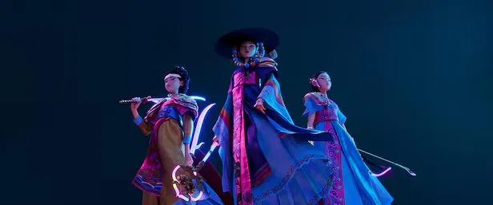

전통이 작동하는 방식
이미지 탈환
과거의 전통 요소가 단지 '낡고 지루한 것'으로 치부되던 고정관념에서 벗어났습니다. 자개, 산수화, 굿 등 고착화되었던 전통 기법들을 네온 비주얼과 압도적인 100인 군무 등 현대적 감각의 외형과 융합하여 주체적이고 힙한 미적 자산으로 완전히 탈환해 냈습니다.
매체의 다양성
전통의 재해석은 특정 장르에 머물지 않습니다. 넷플릭스 2D 애니메이션이라는 '디지털 영상 미디어'와 스트릿 우먼 파이터 2라는 '라이브 댄스 퍼포먼스'라는 전혀 다른 두 축을 통해 시너지를 내며, 전 세계 대중들에게 다양한 채널을 통해 입체적이고 다각적인 영감을 불어넣고 있습니다.
글로벌 공명
가장 한국적인 것이 가장 세계적인 것임을 증명합니다. 단순한 민속적 요소의 나열을 넘어, 굿의 격동적인 샤머니즘적 분출과 자개의 영롱한 퓨처리즘적 광택은 전 세계 누구나 시각적·청각적 카타르시스를 느낄 수 있는 보편적 예술 언어로 확장되어 큰 울림을 전달합니다.
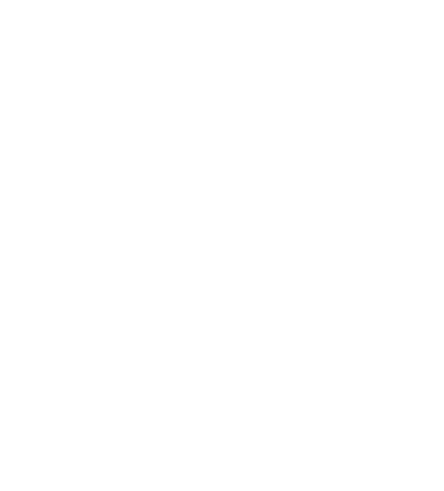
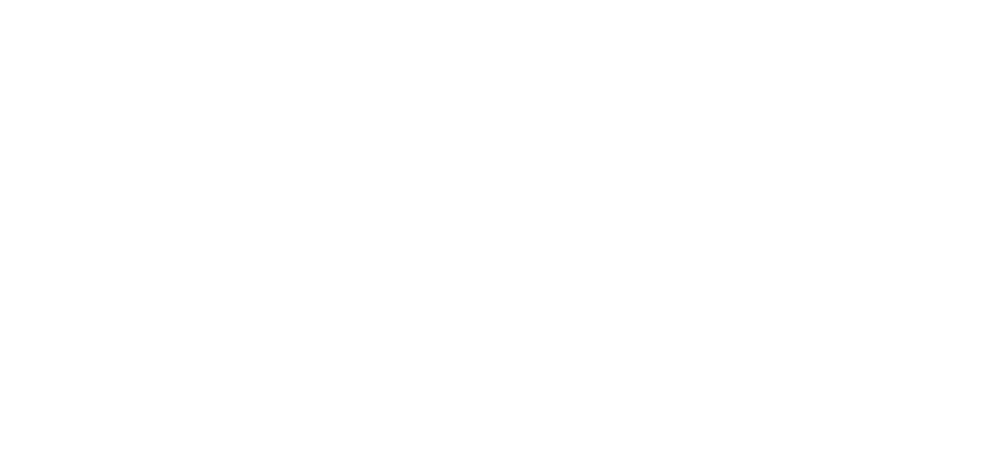
OH MY GAT
영어 감탄사 'Oh my God'의 발음을 빌려, God 자리에 조선시대 전통 모자 갓(GAT)을 넣은 언어유희입니다. 낯익은 표현 안에 전통을 끼워 넣은 이 제목은, 프로젝트의 방향성인 '전통의 재해석'을 첫 글자부터 담아냅니다.
자개 일월오봉도
조선 왕실의 상징인 일월오봉도를 배경으로 사용했습니다. 원본의 채색화 형식 대신 나전칠기(자개) 특유의 광택과 흑백 톤으로 재해석해, 전통 소재를 현대적 감각으로 새롭게 표현했습니다.
韓魂 — 한혼
한국 한(韓)과 넋 혼(魂)을 결합한 조어로, '한국의 영혼'을 뜻합니다. 한류가 단순한 유행이 아닌 오랜 문화적 감수성에서 비롯되었다는 의미를 담았습니다. 전통에서 벽사와 생명력을 상징하는 붉은색으로 표기해, 검은 배경 위에서 시각적 강조점을 만들었습니다.
TRADITION REWRITTEN
포스터의 부제이자 프로젝트 전체의 논지를 압축한 한 문장. 전통은 과거에 고정된 것이 아니라 매 시대의 언어로 끊임없이 다시 쓰입니다.
모서리 장식 — 창살 문양
한국 전통 건축의 창살 문양에서 착안한 프레임 장식입니다. 시선을 자연스럽게 중앙으로 유도하는 동시에, 전통 공예의 섬세함을 레이아웃 안에 녹여내는 역할을 합니다.